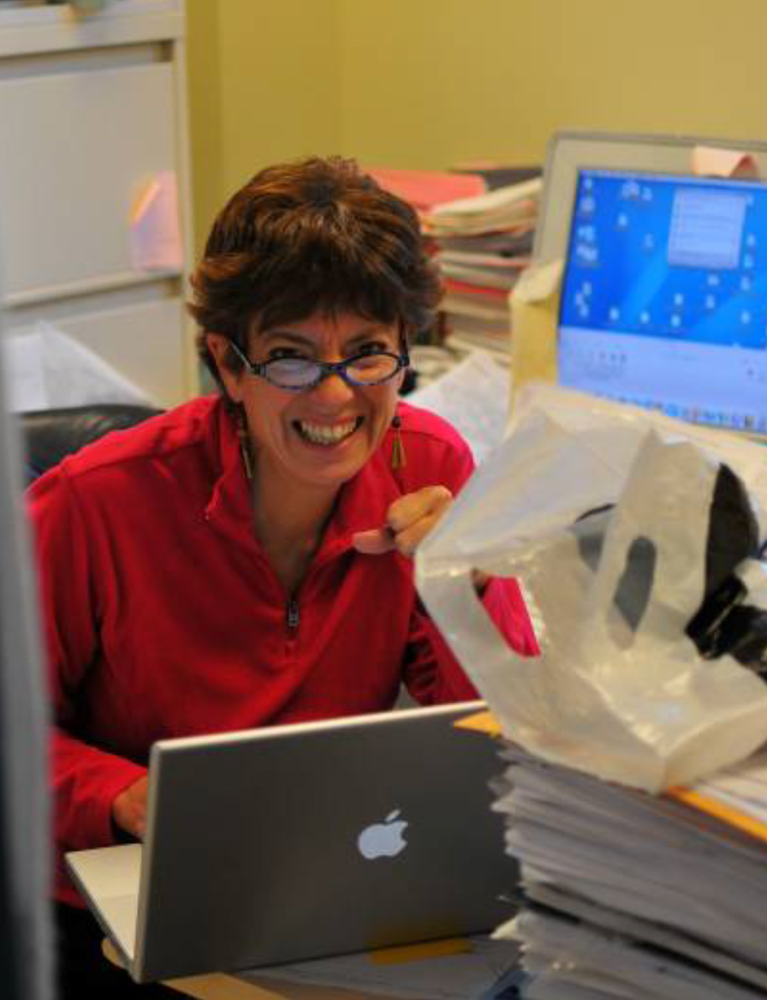
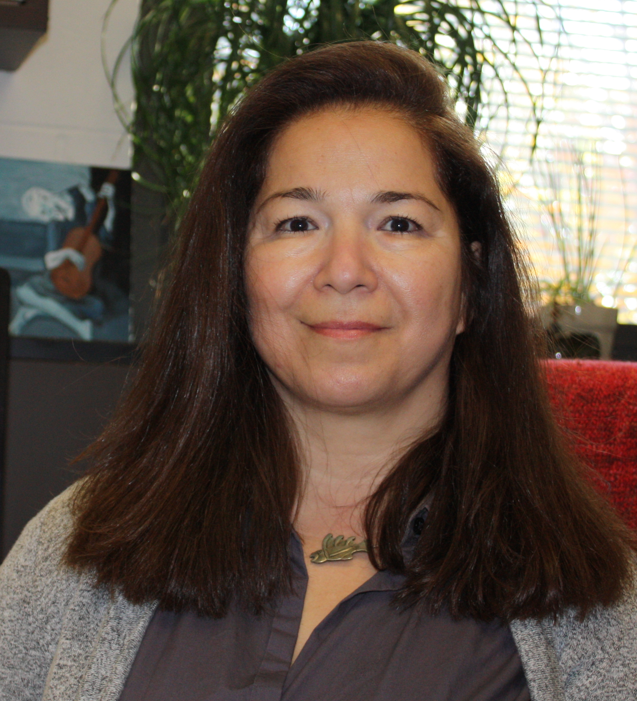
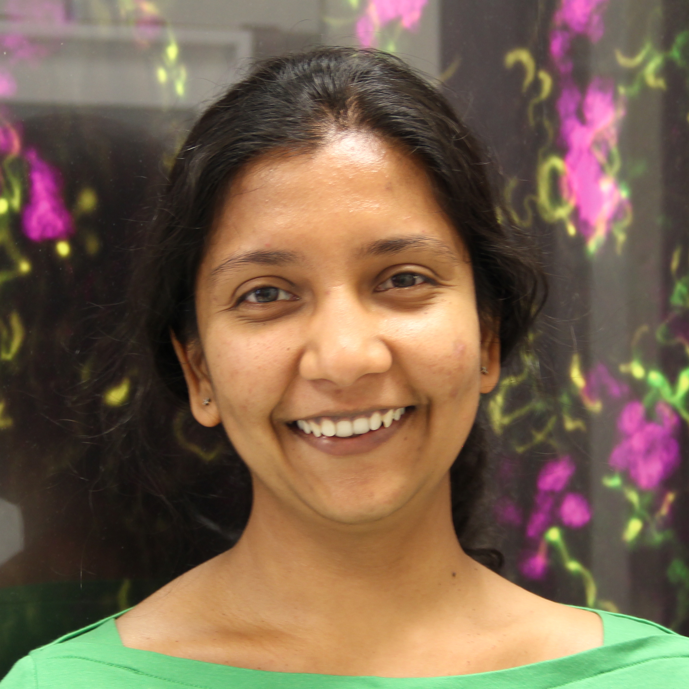
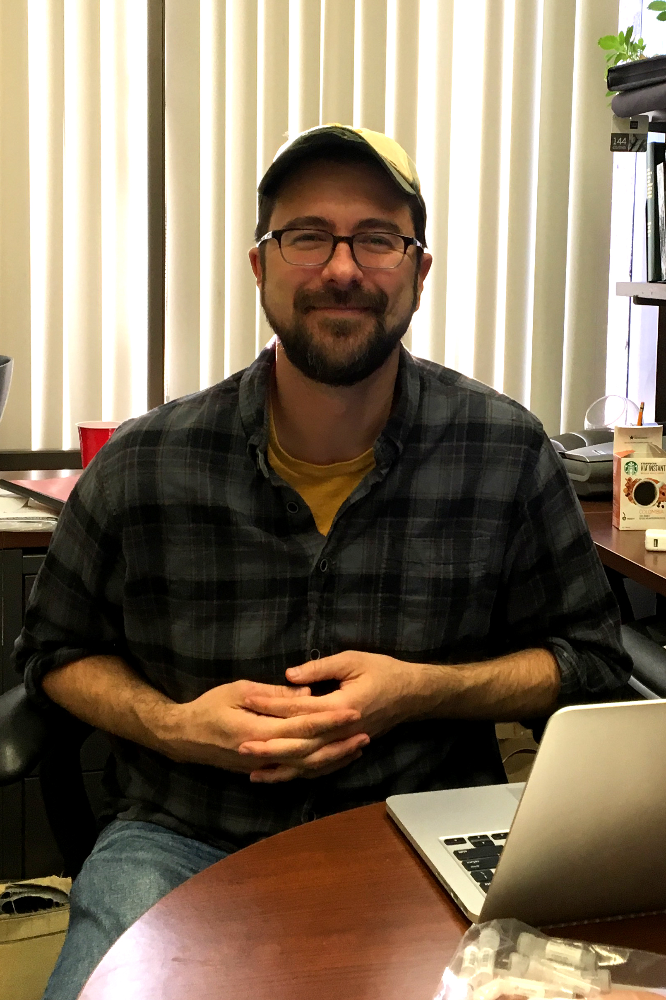

Keynote Speakers |
|

Dr. Monica Driscoll Professor Rutgers University Laboratory website |
 Dr. Len Zon
Dr. Len ZonGrousbeck Professor of Pediatric Medicine Harvard Medical School Laboratory website |
Speakers |
 Dr. Prashanth Rangan
Dr. Prashanth RanganAssistant Professor of Biological Sciences University at Albany Laboratory website |
| Dr. Kristi Wharton Associate Professor of Medical Sciences Brown University Laboratory website |
|
Dr. Mara Schvarzstein Associate Professor, Biology Brooklyn College Laboratory website |
|
Dr. Mansi Srivastana Assistant Professor of Organismic and Evolutionary Biology Curator of Invertebrate Zoology in the Museum of Comparative Zoology Harvard University Laboratory website |
 Dr. Kathryn Kavanagh Dr. Kathryn KavanaghAssistant Professor, Biology University of Massachusetts Dartmouth Laboratory website |
 Dr. Vivian Irish Dr. Vivian IrishChair & Professor of Molecular, Cellular and Developmental Biology Professor of Ecology and Evolutionary Biology Yale University Laboratory website |
 Dr. Ken Birnbaum Dr. Ken BirnbaumAssociate Professor of Biology New York University Laboratory website |
 Dr. Lionel Christiaen Dr. Lionel ChristiaenAssociate Professor of Biology New York University Laboratory website |
 Dr. Carrie Adler Dr. Carrie AdlerAssistant Professor, Department of Molecular Medicine Cornell University College of Veterinary Medicine Laboratory website |
 Dr. Anna-Katerina Hadjantonakis Dr. Anna-Katerina HadjantonakisProfessor, Developmental Biology Program Memorial Sloan Kettering Cancer Center Laboratory website |
 Dr. Marcos Simoes-Costa Dr. Marcos Simoes-CostaAssistant Professor, Department of Molecular Biology and Genetics Cornell University Laboratory website |
| Dr. Ben Martin Assistant Professor, Department of Biochemistry and Cell Biology Stony Brook University Laboratory website |

|
Society for Developmental Biology 2017 Northeast SDB Regional Meeting |